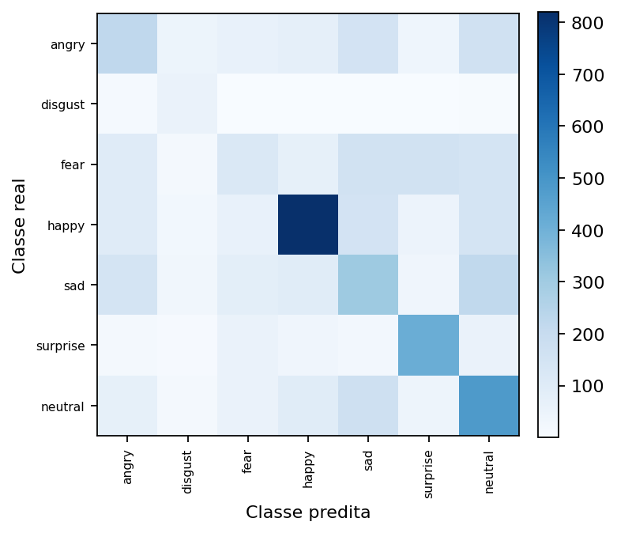
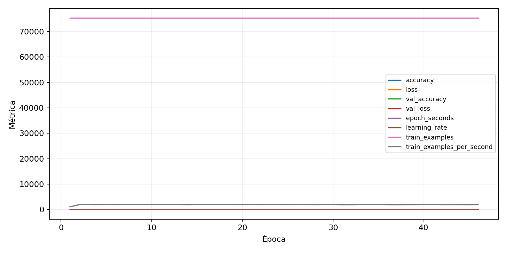

| n_samples | 5382 |
|---|---|
| loss | 1.4095174074172974 |
| accuracy | 0.4485321441843181 |
| balanced_accuracy | 0.4673304287111176 |
| macro_f1 | 0.42125561113609805 |


| Índice | Classe | Suporte | Precisão | Recall | F1 |
|---|---|---|---|---|---|
| 0 | angry | 743 | 0.3323262839879154 | 0.2960969044414536 | 0.3131672597864769 |
| 1 | disgust | 82 | 0.28061224489795916 | 0.6707317073170732 | 0.39568345323741 |
| 2 | fear | 768 | 0.2757009345794392 | 0.15364583333333334 | 0.19732441471571907 |
| 3 | happy | 1348 | 0.6890756302521008 | 0.6083086053412463 | 0.6461780929866037 |
| 4 | sad | 911 | 0.32012513034410844 | 0.33699231613611413 | 0.3283422459893048 |
| 5 | surprise | 600 | 0.5626702997275205 | 0.6883333333333334 | 0.6191904047976012 |
| 6 | neutral | 930 | 0.3965375103050289 | 0.5172043010752688 | 0.44890340643957066 |
{"adapter":"fer2013","balance_mode":"class_weight","class_names":["angry","disgust","fear","happy","sad","surprise","neutral"],"dataset":"fer2013","dataset_options":{},"dataset_root":"/home/msduda/datasets-tcc/fer2013","native_channels":1,"normalization":"zscore","num_classes":7,"protocol":{"checkpoint_monitor":"val_macro_f1","dtype_policy":"mixed_float16","early_stopping":{"patience":10,"restore_best_weights":true},"evaluation_augmentation":false,"input_channels":"native","optimizer":"Adam","pretrained_weights":false,"reduce_lr_on_plateau":{"factor":0.3,"min_lr":1e-07,"patience":4},"resize":"proportional_padding","test_time_augmentation":false,"training_from_scratch":true},"seed":42,"source_fingerprint":"3c69743206ae28880b6ca82a3a19b8d6c0ca0b7296b7ecc703aa8a76e40db6e0","source_manifest":{"class_names":["angry","disgust","fear","happy","sad","surprise","neutral"],"joined_samples":35887,"metadata":{"file":"/home/msduda/datasets-tcc/fer2013/fer2013.csv","layout":"fer2013-csv"},"name":"fer2013","native_channels":1,"source_path":"/home/msduda/datasets-tcc/fer2013","splits":{"test":3589,"train":28709,"validation":3589},"target_size":64},"target_size":64,"test_fraction":0.15,"train_fraction":0.7,"training":{"augmentation":{"brightness_delta":0.03,"contrast_lower":0.92,"contrast_upper":1.08,"cutout_max_frac":0.08,"cutout_prob":0.25,"flip_lr":true,"noise_std":0.005,"translate_frac":0.05,"zoom_max":1.04,"zoom_min":0.96},"batch_size":512,"default_image_size":64,"dtype_policy":"mixed_float16","early_stopping_patience":10,"extra_fraction":2.0,"image_size_overrides":{"gtsrb":128},"keras_verbose":1,"learning_rate":0.0003,"max_epochs":100,"preprocess_cache_max_mib":2048,"reduce_lr_factor":0.3,"reduce_lr_min_lr":1e-07,"reduce_lr_patience":4,"shuffle_buffer_max_mib":1024},"validation_fraction":0.15}
{"epochs_completed":46,"epochs_recorded":46,"evaluation_seconds":7.828834309999365,"fit_seconds_current_attempt":1923.437342773992,"max_epoch_seconds":70.58055294500082,"max_epochs":100,"mean_epoch_seconds":40.06627459578284,"mean_train_examples_per_second":1895.0495951534533,"median_train_examples_per_second":1914.8112639178444,"min_epoch_seconds":38.9045002960047,"selected_checkpoint":"/mnt/e/tcc-benchmark/outputs/remaining-ram-capped/fer2013/runs/fer2013__zscore__class_weight__seed-42/checkpoints/best.keras","total_seconds":1843.0486314060108,"training_seconds":1843.0486314060108,"wall_seconds_current_attempt":1953.1015087370033}
{"elapsed_seconds":1953.1506459100056,"event_counts":{"data_preparation_end":1,"data_preparation_start":1,"epoch_end":46,"evaluation_end":1,"evaluation_start":1,"fit_end":1,"fit_start":1,"periodic":385,"run_completed":1,"train_start":1},"generated_at":"2026-08-02T12:08:17.259+00:00","gpu_backend":"pynvml","interval_seconds":5.0,"metrics":{"cpu_percent":{"count":439,"max":15.2,"mean":8.188838268792711,"min":0.0,"p50":8.3,"p95":8.7},"disk_data_free_bytes":{"count":439,"max":998258868224.0,"mean":998258868186.6788,"min":998258860032.0,"p50":998258868224.0,"p95":998258868224.0},"disk_data_percent":{"count":439,"max":2.7,"mean":2.7000000000000006,"min":2.7,"p50":2.7,"p95":2.7},"disk_data_total_bytes":{"count":439,"max":1081101176832.0,"mean":1081101176832.0,"min":1081101176832.0,"p50":1081101176832.0,"p95":1081101176832.0},"disk_data_used_bytes":{"count":439,"max":27849961472.0,"mean":27849953317.321186,"min":27849953280.0,"p50":27849953280.0,"p95":27849953280.0},"disk_output_free_bytes":{"count":439,"max":248472494080.0,"mean":248460050086.77905,"min":248458854400.0,"p50":248459608064.0,"p95":248461039206.4},"disk_output_percent":{"count":439,"max":75.2,"mean":75.2,"min":75.2,"p50":75.2,"p95":75.2},"disk_output_total_bytes":{"count":439,"max":1000186310656.0,"mean":1000186310656.0,"min":1000186310656.0,"p50":1000186310656.0,"p95":1000186310656.0},"disk_output_used_bytes":{"count":439,"max":751727456256.0,"mean":751726260569.221,"min":751713816576.0,"p50":751726702592.0,"p95":751727390720.0},"elapsed_seconds":{"count":439,"max":1953.100499,"mean":981.4188897357631,"min":0.03287,"p50":982.146859,"p95":1868.3001678000003},"gpu_count":{"count":439,"max":1.0,"mean":1.0,"min":1.0,"p50":1.0,"p95":1.0},"gpu_memory_percent":{"count":439,"max":54.19669151306152,"mean":54.19669151306152,"min":54.19669151306152,"p50":54.19669151306152,"p95":54.19669151306152},"gpu_memory_total_bytes":{"count":439,"max":8589934592.0,"mean":8589934592.0,"min":8589934592.0,"p50":8589934592.0,"p95":8589934592.0},"gpu_memory_used_bytes":{"count":439,"max":4655460352.0,"mean":4655460352.0,"min":4655460352.0,"p50":4655460352.0,"p95":4655460352.0},"gpu_temperature_c":{"count":439,"max":58.0,"mean":53.760820045558084,"min":42.0,"p50":54.0,"p95":57.0},"gpu_utilization_percent":{"count":439,"max":68.0,"mean":31.637813211845103,"min":5.0,"p50":34.0,"p95":60.0},"process_cpu_percent":{"count":439,"max":185.3,"mean":98.901138952164,"min":0.0,"p50":102.6,"p95":105.0},"process_read_bytes":{"count":439,"max":318799872.0,"mean":318799872.0,"min":318799872.0,"p50":318799872.0,"p95":318799872.0},"process_rss_bytes":{"count":439,"max":3660439552.0,"mean":3563967891.5353074,"min":2974085120.0,"p50":3577380864.0,"p95":3585499136.0},"process_vms_bytes":{"count":439,"max":48434020352.0,"mean":48327757945.293846,"min":47615787008.0,"p50":48350257152.0,"p95":48351305728.0},"process_write_bytes":{"count":439,"max":1241088.0,"mean":1241088.0,"min":1241088.0,"p50":1241088.0,"p95":1241088.0},"ram_available_bytes":{"count":439,"max":13665734656.0,"mean":13072476201.986332,"min":12978352128.0,"p50":13055987712.0,"p95":13106217779.2},"ram_percent":{"count":439,"max":21.9,"mean":21.351252847380408,"min":17.8,"p50":21.4,"p95":21.5},"ram_total_bytes":{"count":439,"max":16619089920.0,"mean":16619089920.0,"min":16619089920.0,"p50":16619089920.0,"p95":16619089920.0},"ram_used_bytes":{"count":439,"max":3640737792.0,"mean":3546613718.0136676,"min":2953355264.0,"p50":3563102208.0,"p95":3569349017.6}},"sample_count":439,"schema_version":1}